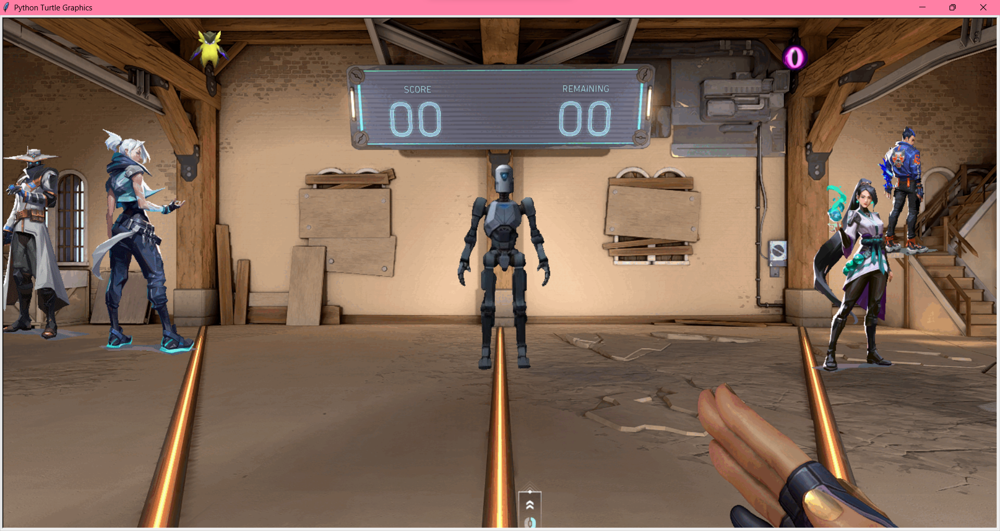
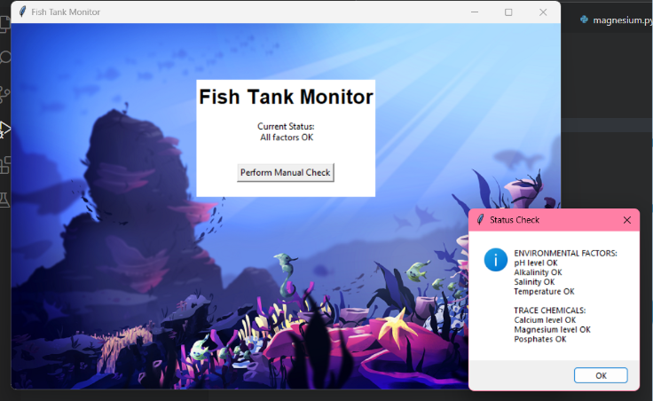
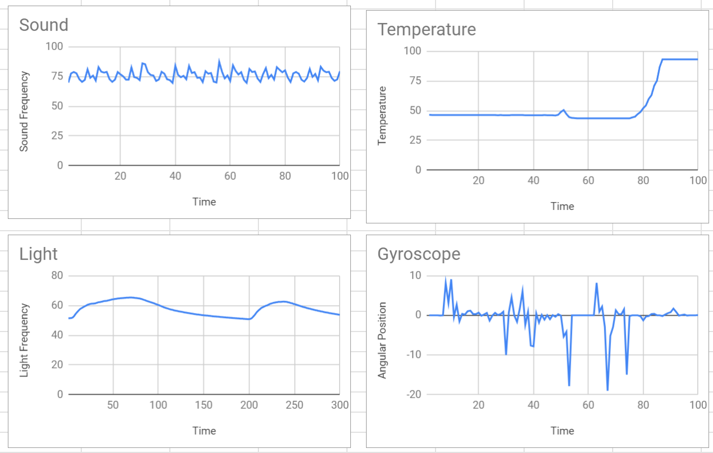

This is my Portfolio Page!
Don't Crash!
By: Renee Mercado, Liam Nicotera, and Layla Idoui
This racing game allows you to customize your racer. Afterward, you can avoid obstacles(moving cars) by controlling your customized car with the arrow keys.
At the very end of the game, you get to see an amazing win screen with fireworks if you hit no obstacles!
The Range - Aim Trainer
By: Renee Mercado and Aayushman Chaudhary
This aim trainer allows you to train your aim and precision to better your Valorant gameplay. Click only the bot and Wingman to accumulate points! Clicking the agents will deduct points!
At the end of the game, it will display where you land on the leaderboard and your Valorant rank.

Doggy Volley!
By: Renee Mercado and Farzad Haghighat Kashani
Doggy Volley is a two-player spaced-themed volleyball game! In Doggy Volley, you can customize your background while listening to fun upbeat background music!
The first player to eight points wins!
Project 2.1.6 - pHishy Tank Project
By: Renee Mercado and Hope Siapno
In this assignment, we utilized our knowledge of phishing and debugging to help fix the fish tank monitors.
Through this project, we were able to locate the data breach and how to prevent it in the future!

Project 4.1.4 - Strong Acid + Base NetLogo Simulation
By: Renee Mercado and Kat Radibratovic
In this assignment, we utlized the simulation system, NetLogo, to complete a virtual experiment regarding acids and bases.
Through this project, we were able to understand the effects of adding base(solution with a high pH) to a strong acid(solution with low pH) without the dangers that would be present in an actual lab.

Project 3.1.6 - Rover Phone Home
By: Renee Mercado and Abigail Thai
We concluded that the rover was lost in the Rocky Mountain biome.In this project we determined where to split up the data by graphing the raw data onto one graph. From the raw graph data we found the points that exhibited the largest change in value. These points were where we split up the data. We concluded the Rocky Mountain biome based on our created graphs based on the raw data from the rover. In our temperature graph, we observed cold starting temperature with a peak in temperature which represents lower temperatures that heat up quickly which is concurrent with the Rocky Mountain biome. In our light graph, we observed constant a wave with increasing and decreasing segments. These segments of changing value can be accounted the occasional clouds that pass over the rover. The graph is also located relatively higher nearing 70 which can be explained in the Rocky Mountain biome as the bright, intense light during the daytime. In out gyroscope graph, we observed peaks and valleys in our graph. The change in angular position can be explained by how the rover is going over rocky terrain which is concurrent with the Rocky Mountain biome. In our sound graph, we observed small variation that was constant throughout the graph. This can represent how there are constant winds but varying intensity which is representative with the Rocky Mountain biome.